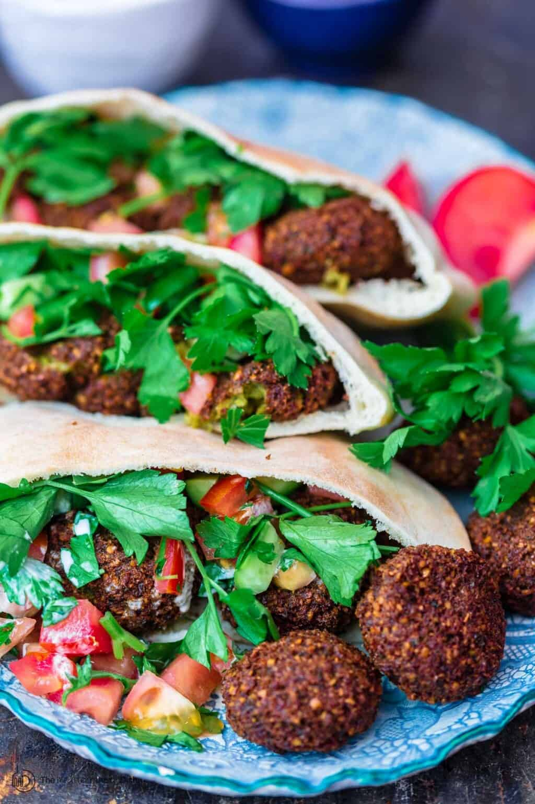

Falafel

Description
A traditional middle eastern food, deep fried ball fritters
made from ground chickpeas and commonly served in a pita, topped with salad and tahini sauce.
Ingredients
- Driead chickpeas
- Fresh herbs (parsley, cilantro, dill)
- Onion
- Garlic
- Salt and Pepper
- Spices (cumin, coriander, cayenne pepper)
- Baking Powder
- Soak chickpeas for 24 hours.
- Make mixture and refrigerate.
- Form patties or balls.
- Fry.